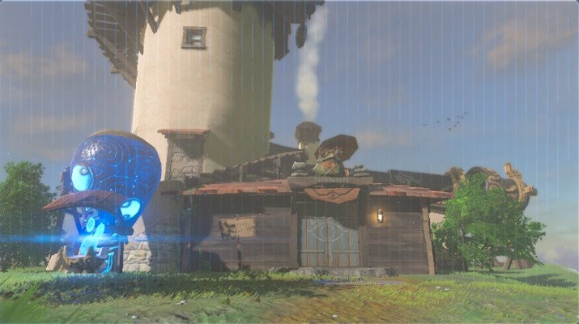
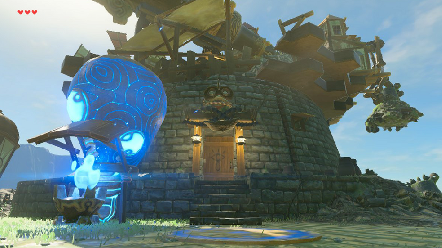

About Us
From arid lands, frosty mountains, eruptive grounds, tranquil waters, and gentle fields, we seek shining examples of various crafts. Together, we are a growing community, assisting each other in ensuring HY-TECH's success.
From arid lands, frosty mountains, eruptive grounds, tranquil waters, and gentle fields, we seek shining examples of various crafts. Together, we are a growing community, assisting each other in ensuring HY-TECH's success.
Located in the Necluda Region, the Hateno Ancient Tech Lab overlooks Hateno Village. Purah, the scientist who runs the place, spends days honing her craft and specializes in Sheikah Slate production and modification. Unbeknownst to many, she performs experiments to alter her ageing process.
 Just past the East Akkala Stable is the renowned Akkala Ancient Tech Lab operated by the eccentric and upbeat mad scientist Robbie! Hee-hee! During the calamity, he provided the hero with his arsenal and gear infused with the power of ancient Sheikah technology. He recently developed a liking towards amiibos and began manufacturing them.
Hyrule’s Hylian Champion who wields the Master Sword.
The majestic and delicate princess of Hyrule herself.
Hyrule’s finest techno-wizard in ancient technology.
From gears to glory, Robbie’s inventions never disappoint.
Guides with her wisdom, guided by her wisdom, Impa’s legacy continues.
With wings of valour and eyes of an eagle, he stands tall as the protector of the Rito skies.
Sidon's pure spirit surges with unyielding optimism and a wave of infectious confidence.
Like his mountainous testament to friendship, Yunobo stands firm as a rock-solid companion.
With a future as vast as the deserts themselves, Riju leads the Gerudo with might.